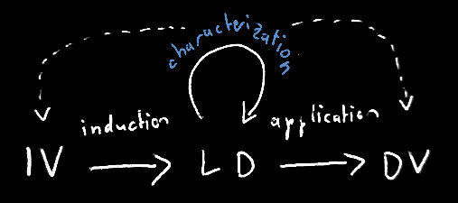

Lucid dreaming
Targets of Lucid dreaming (LD) research can be roughly separated into this state's induction, characterization and application.

dreamstimlab is mainly concerned with LD characterization:
Better characterization of LD itself informs about more targeted factors that help induce this state - thus closing the iterative loop that will likely one day identify how to reliably induce dream lucidity "on button press".
Beyond dreaming
dreamstimlab's research questions will